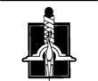

Kardeş Katili
Doğrudan baktığında kendisine doğru kayar gibi görünen uzaktaki tuhaf solgun tepeler, kendisini boşluğa sarmadığı zamanlarda, Rand'ın başını döndürüyordu. Boşluk zaman zaman, farkında olmadan onu sarıyordu, fakat Rand ondan delicesine kaçıyordu. Boşluğu o huzursuz edici ışıkla paylaşmaktansa, başının dönmesini yeğliyordu. Solgun toprağa gözünü dikip bakmayı bin kat yeğlerdi. Yine de tam önlerinde olmadıkça, fazla uzaktaki hiçbir şeye bakmamaya çalışıyordu.
Hurin, izin içinden geçtiği toprakları göz ardı etmeye çalışır gibi izi koklamaya konsantre olurken yüzünde donuk bir ifade vardı. Koklayıcı, etraflarındaki şeyleri fark ettiğinde de irkilip ellerini ceketine sildikten sonra, diğer her şeyi dışarıda bırakarak, çakmak çakmak yanan gözleriyle burnunu tazı gibi öne çıkarıyordu. Loial eyerinde çökmüş, kulakları huzursuzca seğirerek, kendi kendine mırıldanarak ilerliyordu.
Bir kez daha kararmış ve yanmış araziden geçtiler, atların nallarının altında çatırdayan toprak bile kavrulmuş gibiydi. Genişlikleri zaman zaman bir mili bulan kavruk kuşakların tümü de ok uçuşu gibi dümdüz doğuyla batıya uzanıyordu. Rand iki kez üzerinden geçtikleri bir yanığın ucunu, bir kez de yakınından geçtikleri bir yanık kuşağın sonunda sivrilerek birer noktada bittiğini gördü. En azından onun gördüğü uçlar böyleydi, ama hepsinin aynı olduğundan kuşkulanıyordu.
Bir defasında, Emond Meydanı'nda, Whatley Eldin'in bir arabayı Gündönümü için süslediğini görmüştü. What, manzaraları parlak renklerle resmetmiş, etraflarını girift el yazılarıyla bezemişti. What, kenarlıklarda fırçasının ucunu arabaya değdirerek o bastırdıkça kalınlaşan o kaldırdıkça incelen bir çizgi oluşturmuştu. Toprak da aynen böyle, birisi onu ateşten dev bir fırçayla çizmiş gibi görünüyordu.
Yanıkların olduğu yerde hiçbir şey yetişmese de yanıkların bazıları, en azından uzun zaman önce tamamlanmış bir süreci hissettiriyordu. Oradaki havada, yanık kokusunun izi, kararmış bir dalı kırıp kokladığında hafif bir koku dahi yoktu. Eskiydi, ancak hiçbir şey gelip toprağı yeniden ıslah etmemişti. Bıçak kadar keskin çizgilerin üzerinde, siyah, yerini yeşile, yeşil de siyaha bırakıyordu.
Yerler çimenle, ağaçlar yapraklarla kaplı da olsa, toprağın geri kalanı da kendince yanık bölgeler kadar ölüydü. Her şeyde, fazla yıkanmış ve güneşte fazla bırakılmış giysilerde olan o solgunluk vardı. Rand'ın duyduğu ya da gördüğü kadarıyla, etrafta hiç kuş ya da hayvan yoktu. Ne havada dönen bir şahin, ne avlanan bir tilkinin sesi, ne bir kuşun şarkısı. Çimenlerin dışında, hışırdayan veya bir ağaç dalına konmuş hiçbir şey yoktu. Ne bir arı, ne de kelebek. Birkaç kez, çoğu zaman kendilerine atların sürünerek inip diğer kıyısına tırmanmak zorunda kaldığı dik kenarları olan derin bir yol oymuş olsa da, suları sığ olan çayların üzerinden geçtiler. Su, atların toynaklarının havalandırdığı çamur dışında berrak akıyor, ama bulanıklığın içinden ne bir ufak balık ne de larva çıkıyordu, suyun yüzeyinde dans eden bir su örümceği veya havada dolanan bir dantelkanatlı böcek vardı.
Su içilebilirdi, mataralarındaki su sonsuza kadar gidemeyeceği için, bu iyi bir şeydi. Suyu ilk tadan Rand oldu ve Loial ile Hurin'in içmesine izin vermeden önce, bekleyip ona bir şey olup olmayacağını görmelerini şart koştu. Onları bu işe kendisi sokmuştu; bu onun sorumluluğuydu. Su soğuktu ve ıslatıyordu, onun için söylenebilecek en iyi şey de buydu. Tadı, kaynatılmış su gibi yavandı. Loial yüzünü buruşturdu, atlar da hoşlanmayarak suya kafalarını sallayıp tereddütle içtiler.
Bir hayat belirtisi vardı; ya da Rand öyle olduğunu düşünüyordu. İki kez gökyüzünün üzerinde, bulutla çizilmiş bir hat gibi süzülen, cılız bir damar gördü. Çizgiler doğal olmayacak kadar düz görünüyordu, ancak onları neyin yapmış olabileceğini tahmin edemiyordu. Çizgilerden diğerlerine bahsetmedi. Hurin ize dalmış, Loial ise kendi içine çekilmiş olduğundan, belki de onları görmemişlerdi. Her halükarda, çizgilerden hiç bahsetmediler.
Sabahın yarısını at üzerinde geçirdikten sonra, Loial birden, tek kelime etmeksizin dev atından aşağıya atladı ve gövdeleri çok kalın, katı ve düz, yerden bir adım yukarıda olmayan pek çok dala bölünmüş devesüpürgesi ağaçlarından oluşan bir kütlenin yanına geldi. Üst taraflarında dalların hepsi yeniden ayrılıyor ve adlarını aldıkları yapraklı çalılara bölünüyorlardı.
Rand Kızıl'ı durdurdu ve ona ne yaptığını soracak oldu, ama Ogier'in ne yaptığının kendisinin de farkında olmadığını hissettiren tavrı, Rand'ın ses çıkarmamasına neden oldu. Loial ağaca uzun uzun baktıktan sonra, ellerini ağacın gövdesine koydu ve derin, yumuşak bir gürlemeyle şarkı söylemeye başladı.
Rand, Ogierlerin ağaçşarkısını, bir defasında Loial ölmekte olan bir ağaca söyleyip onu tekrar hayata döndürdüğünde işitmiş ve ağaçlardan ağaçşarkısıyla işlenen nesneler olan şarkı söylenmiş ağaçları duymuştu. Loial'in dediğine göre, bu Yetenek silinmeye yüz tutmuştu; artık bu yeteneğe sahip olan az sayıda kişiden biriydi; tahtayı daha da makbul ve değerli kılan da buydu. Loial'in daha önce şarkı söylediğini duyduğunda, sanki toprağın kendisi de şarkı söylemiş gibi olmuştu, ancak şimdi Ogier şarkısını neredeyse ürkekçe mırıldanıyor, toprak da onu fısıltıyla yankılıyordu.
Bu sözleri, var olmayan, saf bir şarkıya benziyordu, en azından Rand'ın ayırt edebildiği kadarıyla sözü yoktu; vardıysa bile, suyun çaya dökülmesi gibi ezginin içinde yitip gidiyorlardı. Soluğu kesilen Hurin, gözlerini dikmiş, ona bakıyordu.
Rand, Loial'in ne yaptığından veya nasıl yaptığından emin değildi; türkü yumuşak olmasına rağmen, onu hipnotize edermiş gibi içine alıyor, zihnini neredeyse boşluğun yaptığı gibi dolduruyordu. Loial, koca ellerini ağaç gövdesinde gezdirirken şarkı söylüyor, parmaklarının yanında sesiyle de ağacı okşuyordu. Ağaç gövdesi artık daha düzgündü, sanki okşamaları onu şekillendiriyormuş gibiydi. Rand gözlerini apıştırdı. Loial'in üzerinde çalıştığı kısmın üzerinde de, diğerlerinde olduğu gibi dallar bulunduğuna emindi, ama artık bu kısım Ogier'in başının tam üzerindeki yuvarlak bir uçla sona eriyordu. Rand ağzını açtı, ama şarkı onu susturdu. Şarkı öyle tanıdık geliyordu ki, sanki bilmesi gereken bir şeydi.
Loial'in sesi aniden yükselerek doruğa ulaştı -kulağa neredeyse bir şükran ilahisi gibi geliyordu- ve esintinin solması gibi sona erdi.
"Kahrolayım," diye nefes aldı Hurin. Nutku tutulmuş gibi bir hali vardı. "Buna benzer bir şey duyduysam kahrolayım... Kahrolayım."
Loial'in ellerinde kendi boyunda ve Rand'ın önkolu genişliğinde, düzgün ve cilalı bir asa vardı. Devsüpürgesinde ağaç gövdesinin önceden bulunduğu yerde, yeni bir sürgün vardı.
Rand derin bir nefes aldı. Her zaman yeni bir şey, her zaman beklemediğim bir şey oluyor, fakat bu her zaman korkunç bir şey olmuyor.
Loial'in atına binmesini, sırığı önüne, eyerinin üzerine yerleştirmesini izledi ve atla ilerlediklerine göre, Ogier'in neden bir asa istediğini merak etti. Sonra, kalın sırığı, asıl büyüklüğünde değil, Ogier'in cüssesine orantılı bir açıdan gördü, Loial'in onu nasıl tuttuğunu gördü. "Bir kısamızrak," dedi şaşırarak. "Ogierlerin silah taşıdığını bilmezdim."
"Genellikle taşımayız," diye cevap verdi Ogier neredeyse ters bir tavırla. "Genellikle. Bedeli her zaman fazlasıyla yüksek olmuştur." Dev kısamızrağı elinde tarttı ve büyük burnunu memnuniyetsizlikle kırıştırdı. "İhtiyarlardan Haman, şüphesiz baltama uzun bir sap taktığımı söylerdi, ama ben sadece aceleci veya düşüncesiz davranmıyorum, Rand. Bu yer..." Ürperdi ve kulakları seğirdi.
"Geri dönüş yolunu yakında buluruz," dedi Rand sesini kendinden emin çıkarmaya çalışarak.
Loial onu duymamış gibi konuştu. "Her şey... bağlantılıdır, Rand. Yaşasa da yaşamasa da, var olan her şey bir bütünü oluşturur. Ağaç düşünmez, ama bütünün bir parçasıdır ve bütünün bir... bir duygusu vardır. Mutlu olmanın ne olduğunu nasıl anlatamazsam, bunu da anlatamam, ama... Rand, bu toprak bir silahın yapılmasına memnun olmuştu. Memnun!"
"Işık üzerimize vursun," diye mırıldandı Hurin gerginlikle, "ve Yaradan'ın eli bizi esirgesin. Annenin son kucaklayışına gitsek bile, Işık yolumuzu aydınlatsın." Onu koruyacak bir büyüsü varmış gibi duayı tekrarlayıp durdu.
Rand etrafına bakma dürtüsünü bastırdı. Kesinlikle başını kaldırıp yukarı bakmadı. Gökyüzündeki o dumanlı çizgilerden bir tane daha görmesi, hepsini darmadağın etmeye yetecekti. "Burada bize zarar verecek hiçbir şey yok," dedi kararlı bir sesle. "Biz de gözlerimizi açık tutup hiçbir şeyin bize zarar vermediğinden emin olacağız."
Kendinden bu kadar emin konuşmasını gülünç buldu. Ama diğerlerini izlerken -tüylü kulakları sünmüş Loial'i ve hiçbir şeye bakmamaya çalışan Hurin'i- içlerinden en az birinin kendinden emin görünmesi gerektiğini, aksi halde korku veya güvensizliğin hepsini darmadağın edeceğini biliyordu. Çark istediği gibi döner. Bu düşünceyi kafasından zorla attı. Çark'la hiçbir ilgisi yok. Ta'veren'le, Aes Sedai'yle ya da Ejderle hiç ilgisi yok. Sadece böyle.
"Loial, buradaki işin bitti mi?" Kısamızrağı üzüntüyle ovalayan Ogier başıyla onayladı. Rand Hurin'e döndü. "Hâlâ iz üzerinde misin?"
"Öyleyim, Lord Rand. Öyleyim."
"O halde izi takip etmeyi sürdürelim. Fain ile Karanlıkdostlarını bulduktan sonra, Mat'in hançerini ve Valere Borusu'nu da yanımıza alıp eve birer kahraman olarak döneriz." Kahraman mı? Ben hepimizin buradan sağ çıkmasına tav olurum.
"Buradan hoşlanmadım," diye duyurdu Ogier kesin bir ifadeyle. Kısamızrağı, yakında kullanmayı bekliyormuş gibi tutuyordu.
"Bereket versin ki, burada kalmaya niyetimiz yok, değil mi?" dedi Rand. Bu bir şakaymış gibi Hurin bir kahkaha attı, ama Loial ona soğukkanlı bir bakış attı.
"Bereket versin ki, öyle, Rand."
Yine de, güneye doğru yollarına devam ederlerken, eve döneceklerinden, üstünkörü varsayımının ikisinin moralini de biraz düzelttiğini görebiliyordu. Hurin eyerinde biraz daha dik oturuyordu ve Loial'in kulakları o kadar sarkık görünmüyordu. Korkularını paylaştığını onlara belli etmenin ne yeri ne de zamanı olduğundan, bunu kendisine sakladı ve onunla kendi başına mücadele etti.
Hurin bütün sabah neşesini kaybetmeden, "Bereket versin ki, kalmaya niyetimiz yok," diye mırıldanıp ardından da kıkırdayıp durdu;
Rand sonunda, ona sessiz olmasını söylemek ister hale geldi. Ancak öğlene doğru Koklayıcı gerçekten de susarak kafasını iki yana sallayıp kaşlarını çattı ve Rand adamın hâlâ söylediklerini yineleyip gülüyor olmasını dilediğini fark etti.
"İzde yanlış bir şey mi var, Hurin?" diye sordu.
Sıkıntılı görünen Koklayıcı omuzlarını silkti. "Lord Rand, evet de denebilir, hayır da."
"Ya biri ya da öteki olmalı. İzi kayıp mı ettin? Öyle de olsa bunda utanılacak bir şey yok. Başlangıçta da zayıf olduğunu söylemiştin. Karanlıkdostları bulamasak bile, başka bir Taş bulup o yolla geri döneriz." Işık adına, o olmasın da ne olursa olsun. Rand istifini bozmadı. "Karanlıkdostları buraya gelip de gidebiliyorsa bunu biz de yapabiliriz."
"Ah, izi kaybetmedim, Lord Rand. Hâlâ leş kokularını alabiliyorum. Sorun bu değil. Sadece... sadece..." Hurin yüzünü buruşturarak patladı, "Kokusunu almak yerine onu hatırlıyor gibiyim, Lord Rand. Ama hatırlamıyorum. Sürekli üzerinden geçen onlarca iz oluyor, onlarca ve onlarca ve her türden şiddetin kokusu, bazıları neredeyse taze, ancak diğer her şey gibi solgun. Bu sabah, oyuktan çıktığımızdan hemen sonra, tam ayaklarımın altında, daha birkaç dakika önce yüzlerce kişinin katledilmiş olduğuna yemin edebilirdim, ama etrafta ne bir ceset, ne de çimenlerin üzerinde atlarımızın nal izlerinden başka iz vardı. Böyle bir şey, toprak yırtılıp kana bulanmadan olamazdı, ama yine de bir işaret yoktu. Hepsi böyle, Lordum. Ama izi takip ediyorum, ediyorum. Bu yer sinirlerimi bozuyor. Bundan. Bundan olmalı."
Rand, Loial'e bir bakış attı -Ogier zaman zaman en eski bilgileri bulup çıkarırdı- ama onun da kafası Hurin kadar karışık gibiydi. Rand sesini hissettiğinden daha kendinden emin çıkardı. "Elinden geleni yaptığının farkındayım, Hurin. Hepimizin sinirleri bozuk. Sadece senden geldiğince izi takip edersen onları buluruz."
"Siz nasıl derseniz, Lord Rand." Hurin atını mahmuzladı. "Nasıl derseniz."
Ancak gece çöktüğünde, Karanlıkdostlarından hâlâ bir iz yoktu ve Hurin, izin daha da zayıf olduğunu söyledi. Koklayıcı kendi kendisine sürekli "hatırlamak" hakkında bir şeyler mırıldanıyordu.
Hiçbir işaret yoktu. Gerçekten hiçbir işaret yoktu. Rand Uno kadar iyi bir iz sürücü değildi, ancak İki Nehir'deki herkesin kayıp bir koyunu veya akşam yemeğinde yenecek bir tavşanı bulacak kadar iyi iz sürmesi beklenirdi. O hiçbir şey görmemişti. Onlar gelmeden önce hiçbir canlı asla toprağa dokunmamış gibiydi. Karanlıkdostları önlerinde olsa, bir şey olması gerekirdi. Fakat Hurin, kokusunu aldığını söylediği izi takip edip duruyordu.
Güneş ufka değdiğinde, yanığın değmediği bir ağaç topluluğu içinde kamp kurarak eyer torbalarındaki yiyecekleri yediler. Yavan suyla mideye indirdikleri mayasız ekmek ve kurutulmuş et yemişlerdi, fakat pek doyurucu ya da lezzetli değildi. Rand belki bir haftalık yiyecekleri olduğunu düşünüyordu. Ondan sonra... Hurin azimle, ağır ağır yiyordu, ama Loial kendi payına düşeni yüzünü buruşturarak yuttuktan sonra büyük kısamızrağı elinin altında tutarak, piposunu yakıp arkasına yaslandı. Rand ateşlerini ufak tutmaya ve ağaçların arasında iyice gizlemeye özen gösterdi. Hurin'in, izin tuhaflığına dair tüm endişelerine bakılırsa, Fain ile Karanlıkdostları ve Trolloclar, ateşi görebilecek kadar yakında olabilirdi.
Onları Fain'in Karanlıkdostları, Fain'in Trollocları olarak düşünmeye başlamış olması ona tuhaf geliyordu. Fain delinin biriydi sadece. Öyleyse onu neden kurtardılar? Fain, Karanlık Varlık'ın onu bulma tezgâhının bir parçasıydı. Belki de bununla bir ilgisi vardı. O halde neden beni kovalamak yerine kaçıyor? Ve o Soluk'u öldüren neydi? Sineklerle dolu o odada ne oldu? Ve beni Fal Dara'da izleyen o gözler. Beni çam özünde bir kınkanatlı böcek gibi yakalayan o rüzgâr. Hayır, Ba'alzamon'un ölü olması gerek. Aes Sedailer buna inanmıyordu. Buna ne Moiraine ne de Amyrlin inanıyordu. İnatla, bunu daha fazla düşünmeyi reddetti. Artık tek düşünmesi gereken, Mat için o hançeri bulmaktı. Fain'i ve Boru'yu bulmak.
Asla bitmez, al'Thor.
Ses; kafasının gerisinde fısıldayan ince bir meltem, zihninin çatlaklarından içeri sızan, buzlu bir mırıltı gibiydi. Ondan kaçmak için neredeyse boşluğu arayacaktı, ama onu orada neyin beklediğini hatırladığında, bu isteği bastırdı.
Akşamın alacakaranlığında kılıcıyla Lan'in öğrettiği duruşları, bu defa boşluk olmadan çalıştı. İpeği Ayırma. Sinekkuşunun Balgülünü Öpüşü. Denge için, sazlarda Yürüyen Balıkçıl. Hızlı, kendinden emin devinimlerde kaybolup bir süre nerede olduğunu unutarak, bedeni terle kaplanana dek çalıştı. Ancak bittiğinde her şey geri geldi; hiçbir şey değişmemişti. Hava soğuk olmamasına rağmen ürperdi ve ateşin yanına çömelirken cüppesine sarındı. Diğerleri de ruh halini sezdiler ve yemeklerini çabucak ve sessizlik içinde bitirdiler. Son titrek alevlerin üzerine ayağıyla toprak örtünce kimse yakınmadı.
Rand ilk nöbeti kendisi alarak, ağaçlığın kenarında, zaman zaman kınında kılıcını gevşeterek yürüdü. Artık donuk mehtap dolunaya yaklaşmış, siyahlığın içinde, yüksekte asılıydı ve gece de gün kadar sessiz, onun kadar boştu. Doğru sözcük boş olacaktı. Topraklar tozlu bir sütçü arabası kadar boştu. Dünyanın tamamında, bu dünyanın tamamında üçü dışında herhangi bir kimsenin olduğuna, Karanlıkdostlarının bile orada, önlerinde bir yerde olduğuna inanmak zordu.
Ona arkadaş olsun diye Thom Merrilin'in pelerinini çözerek rengarenk yamaların üzerinde duran sert deri kılıflarındaki harp ve flütü ortaya çıkardı. Altın ve gümüş renkli flütü kılıfından çıkardı ve onu eline alıp "Söğütleri Sallayan Rüzgâr"ın birkaç notasını diğerlerini uyandırmamak için usulca çalarken âşığın ona çalmayı öğretişini hatırladı. Usul, hüzünlü sesler bile o yerde fazlasıyla yüksek, fazlasıyla gerçekti. İçini çekerek flütü yerine koydu ve çıkını yeniden bağladı.
Nöbeti gecenin ilerleyen saatlerine kadar sürdürerek diğerlerinin uyumasına izin verdi. Aniden bir sisin yükseldiğini fark ettiğinde, saatin ne kadar geç olduğunu bilmiyordu. Sis; koyu, yere yakındı; Hurin ile Loial'i bulutların içindeki şekilsiz şişkinlikler gibi gösteriyordu. Daha yüksekte ve daha ince olmasına rağmen, yine de etraflarındaki araziyi örtüyor, en yakındaki ağaçlar dışındaki her şeyi gizliyordu. Ay, ıslak ipeğin ardından görülüyormuş gibiydi. Her türlü şey onlara görülmeden yaklaşabilirdi. Kılıcına dokundu.
"Kılıçlar benim karşımda işe yaramaz, Lews Therin. Bunu bilmen gerekir."
Rand dönüp kılıcını eline alıp balıkçıl nişanlı kılıcı önünde dimdik tutarken, sis, ayaklarının etrafında döndü. Boşluk içine süzüldü; ilk defa lekeli saidin ışığını fark etmedi bile.
Uzun bir asayla yürüyen gölgeli bir şekil, sisin içinde onlara yaklaştı. Arkasında, gölgenin dev bir gölgesi olduğunu düşündürecek bir şekilde sis, karararak geceden bile koyu bir renge bürünüyordu. Rand'ın tüyleri diken diken oldu. Şekil giderek yaklaşıyordu, nihayet siyah giysileri ve eldivenleri, yüzünü kaplayan bir maskesi olan bir insan siluetine büründü, gölge de onunla birlikte geldi. Asası da siyahtı, sanki tahta kararmış gibiydi, fakat yine de parlaktı ve ay ışığında su gibi parlıyordu. Bir an maskedeki göz delikleri, arkalarında göz yerine ateşi varmış gibi parladı, ama adamın kim olduğunu anlamak için Rand'ın bunu görmeye ihtiyacı yoktu.
"Ba'alzamon," diye nefes verdi. "Bu bir düş. Öyle olmalı. Uykuya daldım ve-"
Ba'alzamon, açık bir fırının kükreyişini andıran bir sesle gördü. "Her zaman olanı inkâr etmeye çalışırsın, Lews Therin. Elimi uzatırsam, sana dokunabilirim, Kardeşkatili. Sana her zaman dokunabilirim. Her zaman ve her yerde."
"Ben Ejder değilim! Benim adım Rand al'-" Rand kendisine engel olmak için dişlerini sıkı sıkı kapadı.
"Ah, şimdilerde kullandığın ismi biliyorum, Lews Therin. Çağlarca kullandığın tüm isimleri, Kardeşkatili dahi olmazdan çok önceki isimlerini biliyorum." Ba'alzamon'un sesi yükselmeye başladı; zaman zaman gözlerindeki ateşler öyle yükseliyordu ki, Rand onları ipek maskedeki açıklıklardan, uçsuz bucaksız alev denizleri gibi görebiliyordu. "Seni tanıyorum, kanını ve var olan ilk yaşam kıvılcımına, İlk An'a kadar tüm soyunu tanıyorum. Benden asla gizlenemezsin. Asla! Biz ikimiz, birbirimize bir paranın iki yüzü gibi bağlıyız. Sıradan insanlar Desen'in kıvrımında gizlenebilir, ama ta'veren'ler tepedeki fener ateşleri gibi göze çarpar ve sen, sen ise gökte bin ışıldayan ok varmış da seni gösteriyormuş gibi göze çarparsın! Sen benimsin ve her zaman elimin ulaşabileceği yerdesin!''
"Yalanların Babası!" diyebildi Rand. Boşluğa rağmen dili damağına yapışmak istiyordu. Işık adına, lütfen bir rüya olsun. Bu düşünce sekerek boşluğun dışına çıktı. Düş olmayan düşlerden biri bile olsa. Gerçekten önümde duruyor olamaz. Karanlık Varlık Shayol Ghul'de hapis, Yaradılış anında Yaradan tarafından tutsak edilmiş... Gerçeği, bunun işe yaramayacağını bilecek kadar biliyordu. "Adını iyi bulmuşlar senin! Beni öylece alabilecek isen, neden almadın? Alamazsın da ondan. Ben Işık'ta yürüyorum ve bana dokunamazsın!"
Ba'alzamon asasına dayanarak öne yaslandı ve bir an Rand'a baktıktan sonra, Loial ile Hurin'in başında dikilerek onlara baktı. Dev gölge de onunla birlikte hareket etti. Rand, onun sisi kımıldatmadığını gördü -hareket ederken asası adımlarıyla birlikte salınıyordu, ama gri sis ayaklarının çevresinde, Rand'ın ayaklarının etrafında olduğu gibi girdaplanıp dönmüyordu. Bu onu yüreklendirdi. Belki de Ba'alzamon aslında orada değildi. Belki de bu bir rüyaydı.
"Kendine tuhaf yandaşlar buluyorsun," diye düşüncelere daldı Ba'alzamon. "Her zaman öyle yapardın. Bu ikisi. Seni korumaya çalışan kız. Zavallı bir koruyucu, üstelik de zayıf, Kardeşkatili. Gelişecek bir yaşam süresine bile sahip olsa, asla ardına saklanabileceğin kadar güçlü olamazdı."
Kız mı? Kim? Moiraine kesinlikle bir kız değil. "Neden bahsettiğini bilmiyorum, Yalanların Babası. Yalan üzerine yalan söylüyorsun ve gerçeği söylediğin zaman bile onu çarpıtarak bir yalana çeviriyorsun."
"Öyle mi yapıyorum, Lews Therin? Sen ne olduğunu, kim olduğunu biliyorsun. Sana söyledim. Tar Valonlu o kadınlar da öyle." Rand kımıldandı ve Ba'alzamon ufak bir gök gürültüsünü andıran bir kahkaha attı. "Beyaz Kulelerinde güvende olduklarını sanıyorlar, ama benim müritlerim arasında onlardan bazıları bile var. Adına Moiraine denilen Aes Sedai, sana kim olduğunu söyledi, değil mi? Yalan mı söyledi? Yoksa o da benimkilerden biri mi? Beyaz Kule seni boynuna yular geçirilmiş bir köpek gibi kullanmaya niyetleniyor. Yalan mı söylüyorum? Valere Borusu'nu arıyorsun, derken yalan mı söylüyorum?" Yine güldü ve boşluğun sükûnetine rağmen Rand kulaklarını örtmemeyi güçlükle başardı. "Zaman zaman eski düşmanlar o kadar uzun süre savaşır ki, hiç fark etmeden müttefik olurlar. Sana vurduklarını sanırlar, ama o kadar yakından bağlanmışlardır ki birbirlerine, sanki darbeyi sen yönlendirmiş gibi olursun."
"Beni sen yönlendirmiyorsun," dedi Rand. "Seni inkâr ediyorum."
"Sana bağlı bin tane ipim var, Kardeşkatili, hepsi de ipekten ince, çelikten sağlam. Zaman bizi bin urganla bağladı birbirimize. İkimizin sürdürdüğü savaş -bunu hiç hatırlıyor musun? Daha önce yaptığımız savaşları, Zaman'ın başlangıcına kadar dayanan, sayısız savaşı bir nebze olsun hatırlıyor musun? Ben senin bilmediğin o kadar çok şeyi biliyorum ki! Çok yakında o savaş sona erecek. Son Savaş yaklaşıyor. Sonuncusu, Lews Therin. Sahiden bundan kaçabileceğini düşünüyor musun? Seni zavallı, ürperen solucan. Bana hizmet edecek ya da öleceksin! Ve bu defa döngü senin ölümünle yeniden başlamayacak. Mezar, Karanlığın Yüce Efendisi'ne aittir. Bu defa ölürsen bütünüyle yok olacaksın. Bu defa, sen ne yaparsan yap Çark kırılacak ve dünya yeni bir kalıba dökülecek. Hizmetime gir! Shai'tan'ın hizmetine girmezsen, sonsuza dek yok olacaksın!"
Bu isim zikredildiğinde hava adeta koyulaştı. Ba'alzamon'un ardındaki karanlık kabararak büyüdü ve her şeyi içine alacak gibi oldu. Rand karanlığın onu içine aldığını hissetti, aynı anda hem buzdan soğuk, hem de közlerden daha sıcak, ölümden karanlıktı; dünyayı istila ediyor, onu kendi karanlığına çekiyordu.
Kılıcının kabzasını parmak boğumları acıyana kadar sıktı. "Seni ve gücünü inkâr ediyorum. Ben Işık'ta yürüyorum. Işık bizi esirger ve bizler kendimize, Yaradan'ın elinin ayasında sığınak buluruz." Gözlerini kırptı. Ba'alzamon hâlâ oradaydı ve koca karanlık hâlâ arkasında asılı duruyordu, ancak geri kalan her şey sanki bir yanılsamaydı.
"Yüzümü görmek ister misin?" Bu bir fısıltıydı.
Rand yutkundu. "Hayır."
"Görmen gerekir." Eldivenli el siyah maskeye gitti.
"Hayır!"
Maske çıktı. Bu, korkunç bir şekilde yanmış bir adam yüzüydü. Yine de yüz hatlarını boydan boya kesen siyah kenarlı, kızıl çatlakların arasındaki deri, sağlıklı ve düzgün görünüyordu. Siyah gözler Rand'a bakıyordu; zalim dudaklar gülümserken parlak beyaz dişler onaya çıktı. "Bak bana, Kardeşkatili ve kendi kaderinin yüzde birini gör." Bir an, gözleriyle ağzı, sonsuz ateş mağaralarına açılan kapılara dönüştü. "Kontrolsüz Güç'ün bana bile yapabileceği bu. Ama ben iyileşiyorum, Lews Therin. Daha büyük bir güce giden yolları biliyorum. Fırına uçan bir pervane gibi kavuracağım seni."
"Ona dokunmayacağım!" Rand etrafında boşluğu hissetti, saidin'i hissetti. "Dokunmayacağım."
"Kendine engel olamazsın."
"Beni -rahat- BIRAK!"
"Güç." Ba'alzamon'un sesi yumuşak, ikna edici bir tona büründü. "Yine güce sahip olabilirsin, Lews Therin. Şu an bile ona bağlısın. Biliyorum. Görebiliyorum. Hisset onu, Lews Therin. Senin olabilecek gücü hisset. Tek yapman gereken ona uzanmak. Ama onunla aranda Gölge var. Delilik ve ölüm. Ölmene gerek yok, Lews Therin, bir daha asla."
Rand "Hayır," dedi ama ses konuşmaya, içine işlemeye devam etti.
"Sana o gücü kendini yok etmeyecek şekilde nasıl kontrol edebileceğini öğretebilirim. Yaşayan hiç kimse sana bunu öğretemez. Karanlığın Yüce Efendisi seni delilikten koruyabilir. Güç senin olabilir ve sonsuza kadar yaşayabilirsin. Sonsuza kadar. Tek yapman gereken hizmet etmek. Sadece hizmet etmek. Basit sözcükler -ben sana aidim, Yüce Efendi-, ardından güç senin olacak. Tar Valonlu o kadınların düşlerinde bile göremeyeceği bir güç ve sonsuz yaşam senin olacak. Tek yapman gereken kendini teslim etmek ve hizmetime girmek."
Rand dudaklarını yaladı. Delirmemek. Ölmemek. "Asla. Ben Işık'ta yürüyorum," dedi çatlak bir sesle, "ve bana asla dokunamazsın!"
"Sana dokunmak mı, Lews Therin? Dokunmak mı? Seni kavurabilirim! Bunu sen de tad ve beni anlarsın!"
O kara gözler ve ağız yeniden ateşe, yaz güneşinden daha parlak görünene kadar serpilen ve büyüyen bir aleve dönüştü. Büyüdü ve aniden Rand'ın kılıcı ateşten yeni alınmış gibi içten içe yanmaya başladı. Kabza elini yakarken haykırdı, çığlık attı ve kılıcı elinden bıraktı. Ve sis alev aldı; sıçrayan, her şeyi yakan bir aleme dönüştü.
Rand bağırarak, tüten, kararan ve küller halinde dökülen giysilerine, çıplak teni alevlerde kavrulup çatırdayan ve büzülen elleriyle vurdu. Çığlık attı. Acı içindeki boşluğa vuruyordu ve boşluğun daha derinlerine sürünmeye çalıştı. Aydınlık orada, lekeli ışık göz eriminin hemen dışındaydı. Yarı deli bir vaziyette, artık ne olduğunu umursamaz bir halde saidin'e uzandı, onu etrafına sarmaya, yanmadan ve acıdan kaçıp ona sığınmaya çalıştı. Yangın başladığı gibi kesildi. Rand ceketinin kırmızı yeninden çıkan eline hayretle baktı. Yünde ufacık bir yanık bile yoktu. Hepsini hayal etmişim. Deli gibi etrafına bakındı. Ba'alzamon gitmişti. Hurin uykusunda kıpırdandı; Koklayıcı ile Loial hâlâ alçak sisin içindeki iki tümsekti. Bunu hayalimde gördüm.
Daha fazla rahatlayamadan sağ eline bir acı saplandı ve bakmak için elini çevirdi. Elinin ayasına bir balıkçıl damgası vurulmuştu. Kılıcının kabzasındaki, hiddetli kırmızı balıkçıl, bir ressamın elinden çıkmışçasına düzgün bir biçimde çizilmişti.
Ceketinin cebinden bir mendil çıkararak eline sardı. Eli artık zonklamaya başlamıştı. Boşluğun buna yardımı olurdu -boşluğun içinde acının farkındaydı, ama onu hissetmezdi- ama bu düşünceyi kafasından attı. Artık iki kez bilmeden -bir kez de bilerek; bunu unutamazdı- boşluğun içindeyken Tek Güç'ü yönlendirmeye çalışmıştı. Ba'alzamon onu bununla ayartmaya çalışıyordu. Moiraine ile Amyrlin Makamı bunu yapmasını istiyordu. Bunu yapmayacaktı.